Friendly Neighborhood Spider-Man (2005 - 2007)
| Comic Book | Release Date | Cover |
|---|---|---|
| Friendly Neighborhood Spider-Man #1 Shock |  | |
| Friendly Neighborhood Spider-Man #2 Bargaining | 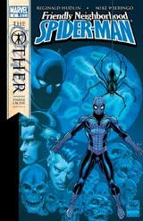 | |
| Friendly Neighborhood Spider-Man #3 Bowing to the Inevitable | 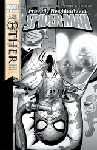 | |
| Friendly Neighborhood Spider-Man #4 Pirate Booty | 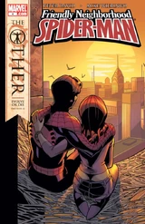 | |
| Friendly Neighborhood Spider-Man #5 Web Log | 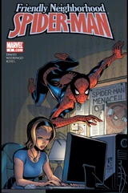 | |
| Friendly Neighborhood Spider-Man #6 Masks: Part 1 of 2 | 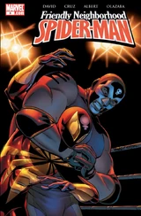 | |
| Friendly Neighborhood Spider-Man #7 Masks: Part 2 of 2 | 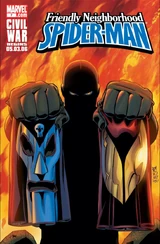 | |
| Friendly Neighborhood Spider-Man #8 Jumping the Tracks: Part 1 of 3 | 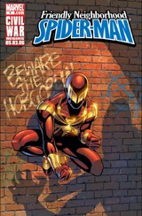 | |
| Friendly Neighborhood Spider-Man #9 Jumping the Tracks: Part II | 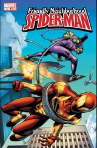 | |
| Friendly Neighborhood Spider-Man #10 Jumping the Tracks: Part III | 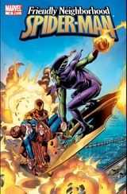 | |
| Friendly Neighborhood Spider-Man #11 I Hate a Mystery: Part 1 of 3 | 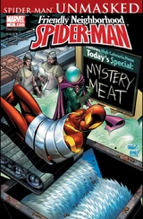 | |
| Friendly Neighborhood Spider-Man #12 I Hate a Mystery: Part 2 of 3 | 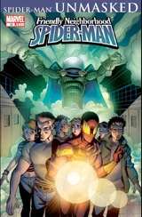 | |
| Friendly Neighborhood Spider-Man #13 I Hate a Mystery: Conclusion | 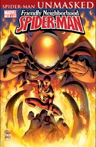 | |
| Friendly Neighborhood Spider-Man #14 Taking Wing: Part 1 of 3 | 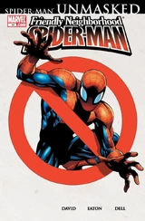 | |
| Friendly Neighborhood Spider-Man #15 Taking Wing: Part 2 of 3 | 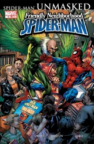 | |
| Friendly Neighborhood Spider-Man #16 Taking Wing: Conclusion | 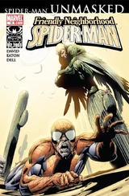 | |
| Friendly Neighborhood Spider-Man #17 Sandblasted: Part 1 of 3 | 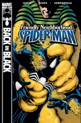 | |
| Friendly Neighborhood Spider-Man #18 Sandblasted: Part 2 of 3 | 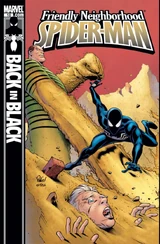 | |
| Friendly Neighborhood Spider-Man #19 Sandblasted: Conclusion | 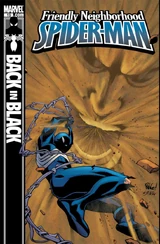 | |
| Friendly Neighborhood Spider-Man #20 Running out of Time | 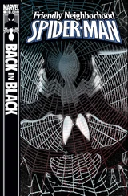 | |
| Friendly Neighborhood Spider-Man #21 Consuming Passions | 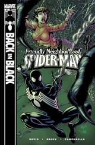 | |
| Friendly Neighborhood Spider-Man #22 Predator/Prey | 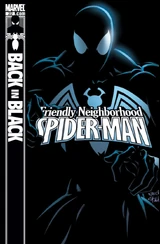 | |
| Friendly Neighborhood Spider-Man #23 Fighting Words | 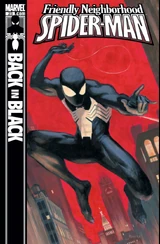 | |
| Friendly Neighborhood Spider-Man #24 One More Day Part 2 of 4: The Other Side of Darkness | 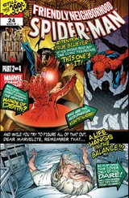 |